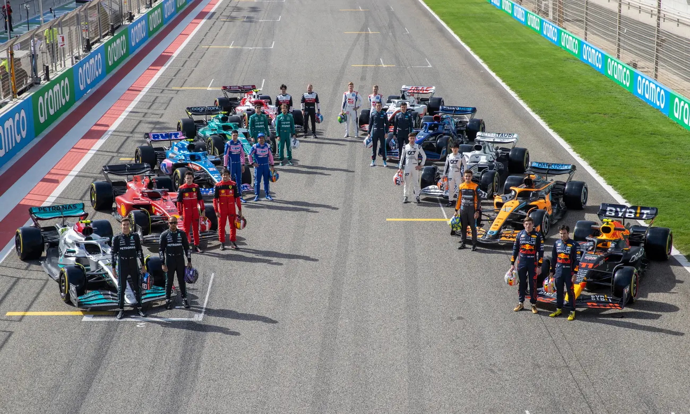

About F1
The fastest road-course racing cars in the world!
Formula 1® is the highest class of international racing for open-wheel single-seater formula racing cars sanctioned by the Fédération Internationale de l'Automobile (FIA). The FIA Formula One World Championship has been one of the premier forms of racing around the world since its inaugural season in 1950. The word formula in the name refers to the set of rules to which all participants' cars must conform. A Formula One season consists of a series of races, known as Grands Prix. Grands Prix take place in multiple countries and continents around the world on either purpose-built circuits or closed public roads.
Would you like to know more? Official F1 pageF1 Teams

Red Bull were no strangers to F1 - as sponsors - prior to formally entering as a works team in 2004. Nonetheless, the scale of their success over the following decade was staggering.
For many, Ferrari and Formula 1 racing have become inseparable. The only team to have competed in every season since the world championship began, the Prancing Horse has grown from the humble dream of founder Enzo Ferrari to become one of the most iconic and recognised brands in the world.

Mercedes’ modern F1 revival started with the creation of a works squad for 2010 - the platform for a meteoric rise up the Grand Prix order.

Alpine may be a relatively new name to Formula 1, but Renault’s famous sportscar arm has plenty of motorsport heritage.

Since entering the sport in 1966 under the guidance and restless endeavour of eponymous founder Bruce, McLaren's success has been nothing short of breathtaking.

Aston Martin’s original Formula 1 foray – over half a century ago – lasted just five races. This time, though, it’s serious.

The youngest team on the grid, Haas made their highly impressive debut in 2016, and in the process became the first all-American-led F1 squad in three decades.

The name Alfa Romeo boasts Formula 1 connections dating back to the championship’s inception in 1950. Fast forward to the 21st century and Italian flare combines with Swiss sensibilities in a new era for the team formerly known as Sauber.

Established in 2006 as a squad in which young drivers from Red Bull’s prodigious talent pool could cut their F1 teeth, AlphaTauri – originally named Toro Rosso – were formed from the ashes of the plucky Minardi team.

Driven on by the brilliance and passion of the late Sir Frank Williams, Williams grew from humble beginnings to become a Formula 1 behemoth, unrivalled by all except Ferrari and McLaren in terms of enduring success.
Would you like to know more about the current (2023) Championship? Here are some useful links:
Drivers Driver Standings Constructor Standings